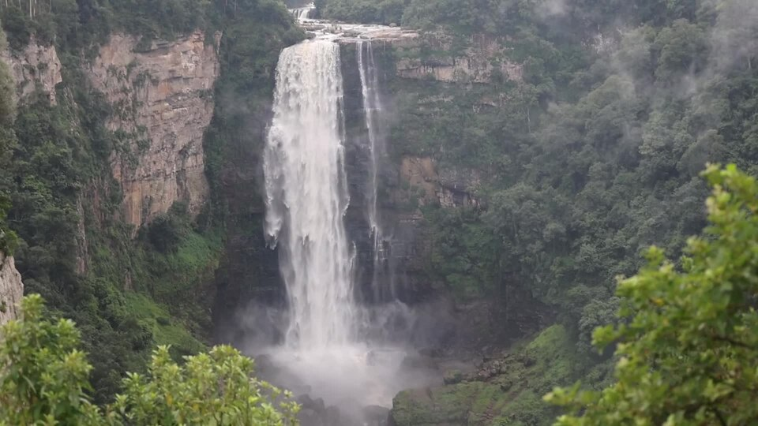
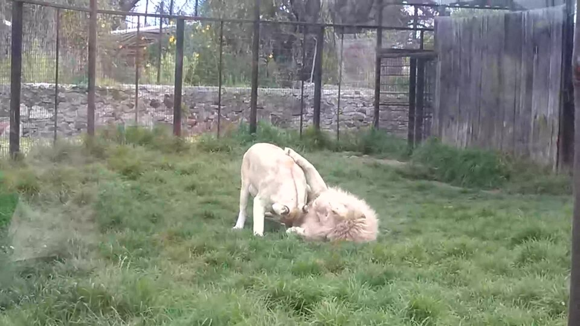
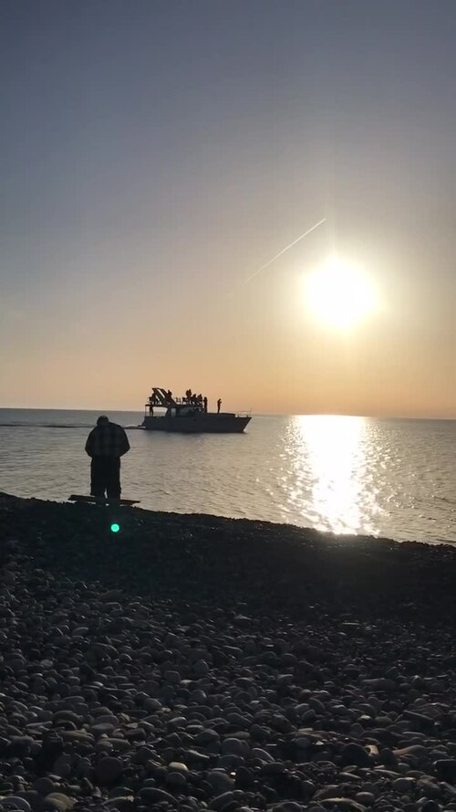
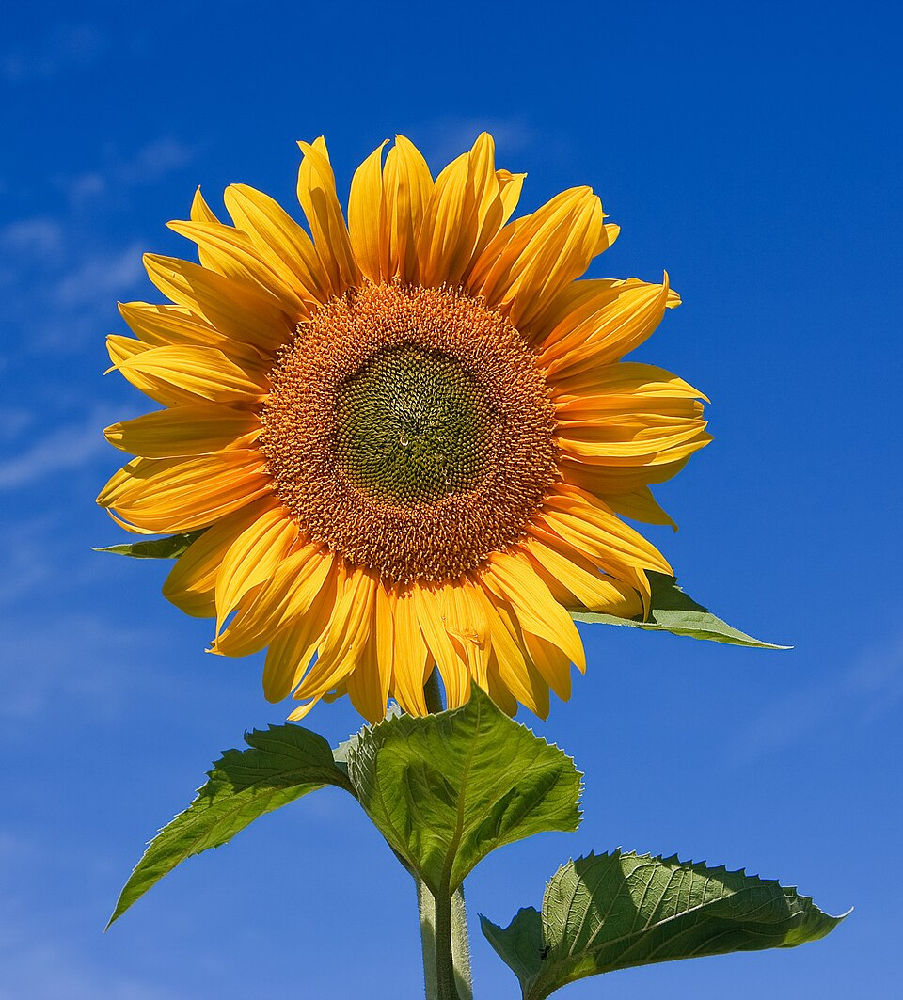

Video Slider Experience
Interactive cinematic video showcase with dynamic thumbnail navigation and playback controls

Cascading Waterfalls
Nature & Wilderness
Savannah Pride
African Wildlife
Golden Sunset
Coastal Horizon